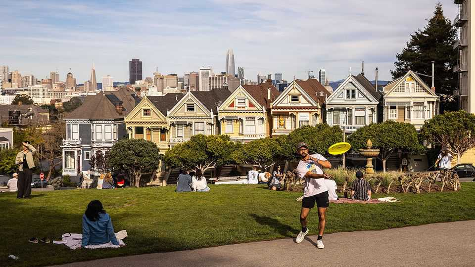
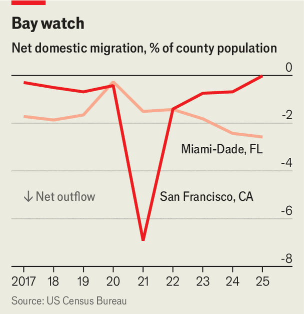

The tide turns for a Florida darling and California loser
Miami faces new problems as San Francisco makes a comeback

Jul 30th 2026
ON A CHILLY night in San Francisco this summer, Persia, a drag queen in a gold dress, danced around a crowd gathered before a big screen to watch the World Cup. “Hopefully that energy will go to Team USA!” she wheezed, out of breath (it didn’t). As Daniel Lurie, the city’s mayor, talked about San Francisco’s recovery from the pandemic, he jerked his head around to check the score. “The city is on the rise,” he insisted, as he gestured at the party before him. “But it’s fragile.”
Such a scene would have been unthinkable a few years ago. During and after the covid pandemic, tech workers toiled remotely, the Financial District was a ghost town and homelessness and public drug use were ubiquitous. Pundits wondered whether a “doom loop” would sink the world’s tech capital. People flocked to cities with lower taxes and cheaper housing, like Austin, Texas and Miami, Florida. Republicans argued that Americans were voting with their feet by leaving states run by Democrats. New political rivalries were born. During “The Great Red v Blue State Debate” in 2023, Fox News pitted Gavin Newsom, the governor of California, against Ron DeSantis, the governor of Florida. Mr DeSantis gloated that California “ran out of U-Hauls” because so many residents were fleeing. He held up a map of San Francisco that marked all the places where human faeces had been found.

Yet pandemic losers and pandemic darlings do not always stay thus. Six years after the world locked down, San Francisco and Miami have seen a reversal in their fortunes. In 2021, San Francisco lost the equivalent of nearly 7% of its population to out-migration, but the exodus has subsided (see chart). Greater Miami lost the equivalent of 3% of its population due to domestic out-migration in 2025, a higher share than any other large county in America.
There are two main trends behind San Francisco’s recovery. The first is a political reckoning that began in 2022, when voters booted their progressive district attorney and three school board members from office. The city’s moderate moment continued in 2024, when San Franciscans elected Mr Lurie, an heir to the Levi Strauss fortune, who promised to clean up the streets and boost the city’s economy. Mr Lurie has set about plugging budget deficits, trying to speed up permitting and advocating against new business taxes. At a moment when some other big cities are flirting with socialism, San Francisco, usually a standard-bearer for progressive politics, has become an unlikely paragon of pragmatism.
Second, the AI boom has injected new life into downtown. The city’s office-vacancy rate is still higher than in other global tech hubs, but it is falling. Between 2019 and 2026 San Francisco and Silicon Valley, just down the road, accounted for two-thirds of all square footage leased by AI firms in the six largest AI markets, according to CBRE, a property firm. Yet fears of a bubble can make it hard to plan. “The thing about AI is nobody knows how big the iceberg is that you’re looking at the tip of,” says Ted Egan, San Francisco’s chief economist. Enrique Landa, a developer, has a sunnier view. “This city has a 150-year track record of setting itself on fire every 20 years and coming back,” says Mr Landa. He offers the gold rush, the 1906 earthquake and the dotcom bubble as evidence of a boom-bust cycle. For now, he’s content to “make hay when the sun is shining”.
In recent years Miami has enjoyed its own boom, with total net migration, including from abroad, jumping from -25,000 to 50,000 from 2021 to 2023. “Hope is what Miami has always sold,” says Fernand Amandi, a longtime Democratic operative in the city. “It’s the appeal of the velvet rope at the nightclub that one day you’ll be able to get past.” Low taxes, lax pandemic policies and sandy beaches haven’t hurt.
However the population of Miami-Dade County, which contains the city, is now ebbing. International migration halved from 2023 to 2025, due largely to Donald Trump’s immigration policies. The city’s other problem is borne of success. Home prices in the county have risen by 58% since 2020, compared with a national average of 44%. As a share of income, Miamians now pay more for housing than residents in any other big American city, including San Francisco and New York.
Residents who cannot afford these costs are now leaving. The average household that moved out of Miami-Dade County in 2023 earned about 40% less than the average newcomer, according to the most recent data from the Internal Revenue Service. This imbalance may become more extreme. “During covid we had lots of millionaires and multimillionaires move here; now you’re really seeing a billionaire movement,” says Daniel de la Vega of ONE Sotheby’s, a top luxury developer in Miami. He reckons that animus toward the uber-rich in other cities is one reason billionaires are fleeing to the beach. New York has a new tax on pieds-à-terre, and California is considering a wealth tax on billionaires. Sergey Brin and Larry Page, Google’s founders, fled Silicon Valley for Miami last year.
Locals in Miami fear they are falling into a familiar trap. “We could become a San Francisco, with massive wealth alongside homelessness,” says Annie Lord of Miami Homes for All, a non-profit. Tax data suggest that San Francisco’s new residents earn about 25% less than those leaving it. Nevertheless, both Miami and San Francisco face the possibility of becoming places for plutocrats to enjoy their palazzos, while their housekeepers live two hours away.
The task for Miami’s politicians, and one that continues to vex San Francisco’s, is to ensure their cities can work for a wide swathe of residents, rather than a select few. When one of your correspondents met Mr Egan at Holbrook House, a newish restaurant in San Francisco, a waiter offered her a tableside champagne cart (she declined). “The seafood tower and caviar are new since the last time I was here,” says Mr Egan. “Walk in, have a $250 spoon of caviar, walk out like it’s a Starbucks.”
Eileen Higgins, Miami’s new mayor, wants to build more affordable homes. “There’s all kinds of ways you can do this,” she told her fellow mayors at a recent conference in California, including making it easier to build housing near public transport. For private developers, however, the more obvious immediate opportunity is to serve the rich. The average home price in Pacific Heights, a posh part of San Francisco, has risen 14% in the past year. Building crews are hard at work on Miami Beach’s gated islands; they’re tearing down stucco bungalows to build “tropical modern” megamansions.■
Stay on top of American politics with The US in brief, our daily newsletter with fast analysis of the most important political news, and Checks and Balance, a weekly note that examines the state of American democracy and the issues that matter to voters.